Getting started with pyBIS: Installation and setup
A step-by-step guide for researchers with no prior experience in Python or command-line tools.
This guide explains how to setup your computer to work with pyBIS for the first time. Including how to create a dedicated Python environment named pybis and install the required packages. You do not need previous programming experience.
This guide is intended for BAM Windows computers with access to the Symantec Software Portal.
What tools will you use?
- Python: the programming language used by
pyBIS. pyBIS: a Python package for communicating with openBIS.ipykernel: a Python package that provides the kernel for executing Python code in Jupyter Notebooks.- Miniforge3: a minimal installer for conda, which is used here to create and manage the isolated Python environment and install the packages required to work with
pyBIS. - uv: a fast, modern Python package and environment manager.
- Visual Studio Code (VS Code): an application for writing and running code.
- Jupyter Notebook: an interactive document where you can write and run Python code one cell at a time.
- Python environment (pybis): a separate workspace containing a Python version and the packages needed to work with pyBIS.
Step 1: Install Visual Studio Code
1.1 Install VS Code
- Open the BAM Symantec Software Portal.
- Search for Visual Studio Code and install it.
- Open VS Code from the Windows Start menu.

1.2 Install the Python and Jupyter extensions
- In VS Code, click the Extensions icon (four squares) in the left sidebar.
- Search for Python, select the extension published by Microsoft, and click Install.

- Search for Jupyter, select the extension published by Microsoft, and click Install.
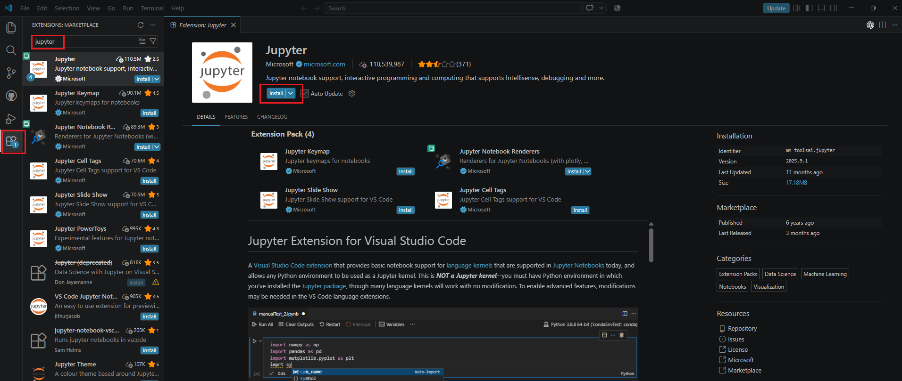
If you see Installed or Uninstall, the extension is already installed.
Step 2: Create the pybis environment and install pyBIS.
What is a Python environment? A Python environment is a separate workspace containing a specific Python version and the packages needed for a project, such as pyBIS and ipykernel.
Why is creating an environment good practice?
It keeps the packages needed for pyBIS separate from those used
in other projects. This helps prevent conflicts between
package versions, makes troubleshooting easier and allows
you to work on different projects without affecting
each other's setup.
A dedicated environment named pybis provides a consistent Python setup while keeping existing Python installations and projects unaffected.
Reusing your environment:
You can continue using this environment to work with pyBIS
and manage your own research data in openBIS.
You do not need to create a new environment every time
you use pyBIS. Simply select the same environment when working with pyBIS in VS Code.
What if the environment stops working? Python environments can usually be repaired or recreated. Before creating a new one, try these troubleshooting steps:
- Check that you have activated the correct Python environment.
- Check that VS Code or Jupyter is using the correct Python kernel.
- Check that
pyBISand the required packages are installed in that environment. - If necessary, reinstall missing packages or recreate the environment by following this guide.
Remember: Recreating a Python environment does not affect research data stored in openBIS. Your notebooks and local research files will also remain safe as long as they are saved outside the environment folder.
Note: Both Miniforge3 and uv can be used to create a Python environment and install the packages required to work with pyBIS and Jupyter Notebooks.
This guide describes both options to accommodate different computer setups and allow you to use either tool.
You only need to install one of these tools and follow the corresponding instructions:
- Option A - Miniforge3 (Steps 2.1a - 2.5a)
- Option B - uv (Steps 2.1b - 2.4b)
- Click the Windows Start button.
- Search for Miniforge Prompt and open it.
Option A: Installation with Miniforge3
2.1a Install Miniforge3
- Open the Symantec Software Portal.
- Search for Miniforge.
- Install Miniforge3 and wait until installation is complete.

2.2a Open Miniforge Prompt
- Click the Windows Start button.
- Search for Miniforge Prompt and open it.
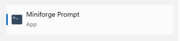
Miniforge Prompt is a window where you enter commands to manage conda environments and run Python. You will use it to create the environment named pybis and install the pyBIS and ipykernel packages.
For each command below, copy the text from the code box, paste it into the Miniforge Prompt (usually using Ctrl + V or right-click), and press Enter. Wait until the command finishes before continuing.
2.3a Create the pybis environment
- Copy the command below, paste it into the Miniforge Prompt, and press Enter.
conda create --name pybis --channel conda-forge python=3.14This creates an environment named pybis with Python 3.14. conda-forge is the package repository from which the required packages are installed.

If the Miniforge Prompt asks Proceed ([y]/n)?, type y and press Enter.
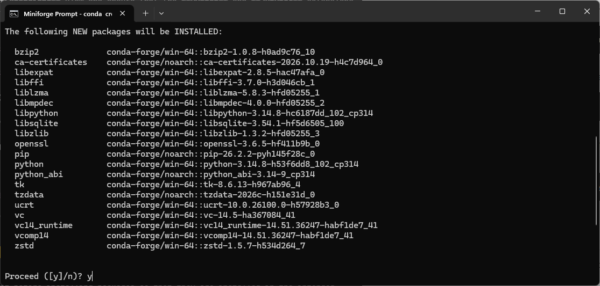
2.4a Activate the environment
- Copy the command below, paste it into the Miniforge Prompt, and press Enter:
conda activate pybisYou should see (pybis) at the beginning of the command line, for example (pybis) C:\Users\yourusername;. This indicates that the environment is active in Miniforge Prompt.

2.5a Install pyBIS and prepare the environment for Jupyter Notebooks
- Copy the command below, paste it into the Miniforge Prompt, and press Enter.
- If prompted, type
yand press Enter.
conda install --channel conda-forge pybis ipykernel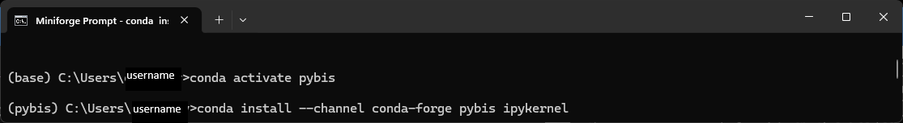
pyBIS and ipykernel are installed. Close Miniforge Prompt and continue with Step 3.Option B: Installation with uv
2.1b Install uv
- Open the Symantec Software Portal.
- Search for uv.
- Install uv and wait until installation is complete.

2.2b Open Windows PowerShell
- Click the Windows Start button.
- Search for Windows PowerShell and open it.

- Verify the installation by checking the version. Copy and paste the command below into the PowerShell window and press Enter.
uv --version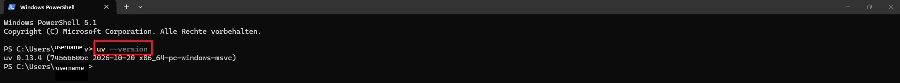
- Navigate to the folder where you want to work with
pyBIS, or create a new one.
To use an existing folder, replace the example path below with the actual path to your working folder:
cd "C:\path\to\your\folder"Alternatively, create a new working folder named pybis-learning in your current location and navigate to it:
mkdir pybis-learning cd pybis-learningor
mkdir pybis-learning
cd pybis-learning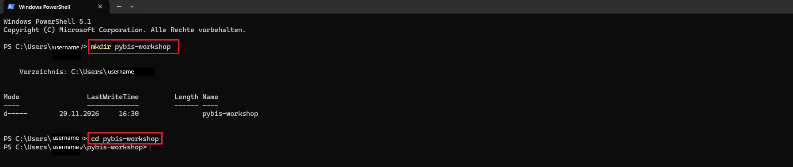
2.3b Create the pybis environment
- Copy and paste the command below into Windows PowerShell and press Enter.
uv venv pybis --python 3.14This creates a virtual environment named pybis with Python 3.14
The Python environment is created in a subfolder named pybis within the working folder you selected or created in Step 2.2b (for example pybis-learning). Save your Jupyter Notebooks and other working files outside the pybis environment folder.
Working folder
Python environment and installed packages
Your Jupyter Notebook, saved later in Step 4

2.4b Install pyBIS and prepare the environment for Jupyter Notebooks
- Copy and paste the command below into Windows PowerShell and press Enter to install the
pyBISandipykernelpackages in thepybisenvironment.
uv pip install --python .\pybis\Scripts\python.exe pybis ipykernel
pyBIS and ipykernel packages.pybis environment with installed pyBIS and ipykernel packages are installed. Close Windows PowerShell and continue with Step 3.Step 3: Open a Jupyter Notebook and select the pybis environment
3.1 Open a Jupyter Notebook in VS Code
- Open Visual Studio Code (VS Code).
- Choose File → New File.
- Select Jupyter Notebook.
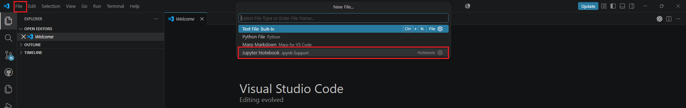
3.2 Select the pybis environment
Before running Python code, choose which Python environment the notebook will use. In a Jupyter Notebook, this means selecting a kernel (the Python interpreter that runs your code).
- Click Select Kernel in the upper-right corner of the notebook.
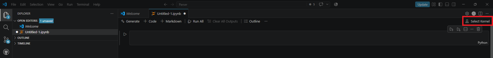
- Choose Python Environments.

- Select the pybis environment you created in Step 2.
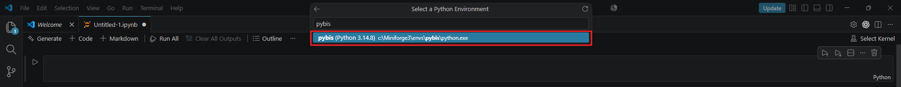
The path to the pybis environment
depends on the installation method and the location
of the environment. For example:
- Miniforge3:
C:\Miniforge3\envs\pybis\python.exe - uv:
C:\Users\yourusername\pybis-learning\pybis\Scripts\python.exe
The actual path on your computer may differ from these examples.
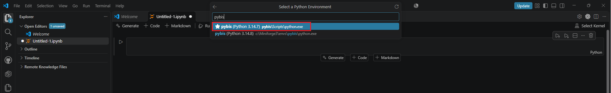
If you created the environment using uv and it is not listed, select File → Open Folder in VS Code and open the working folder you created in Step 2.2b. Repeat the kernel selection process.
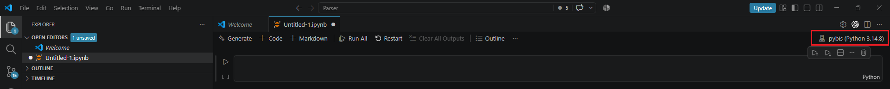
Step 4: Test your pyBIS installation
4.1 Run your first Python code
- Copy the code below and paste it into a notebook code cell.
- Press
Shift + Enterto run the code.
print("Hello! My Python environment is working.")You should see:
Hello! My Python environment is working.This confirms that the notebook can run Python code.
4.2 Check that pyBIS is installed
- Move your mouse below the code cell you just ran.
- Click + Code to add a new code cell.
- Copy the code below, paste it into the new cell and press Shift + Enter.
import pybis
print("pyBIS was imported successfully!")You should see the following output:
pyBIS was imported successfully!import mean? In Python, import makes a package available for use in your code. If the cell runs without errors, pyBIS can be imported from the selected environment. You do not need to connect to an openBIS server for this test.4.3 Save the Jupyter Notebook
- Open File → Save As.
- Choose your working folder and save the notebook as
pybis_installation_test.ipynb. Do not save it inside the Python environment folder. If you used uv, see the example folder structure in Step 2.3b.
- Optional: Select File → Auto Save to anable automatic saving of future edits.
The .ipynb extension identifies a Jupyter Notebook file.
pyBIS can be imported, and your notebook is saved. You are ready to start working with pyBIS.Troubleshooting: Common issues
Start with the checks below. Use Miniforge Prompt for Option A or Windows PowerShell for Option B, depending on the installation option you chose in Step 2.
First identify the type of problem
If an error occurs when trying to use the pybis environment, or VS Code cannot start the notebook kernel, this is likely an installation/environment problem.
If pybis imports successfully but you
cannot connect or log in to openBIS, this may be a
connection or authentication problem.
Installation errors: If Miniforge3 or uv reports a network, SSL or permission error, check your network/VPN connection. Do not disable certificate verification or use administrator privileges as a work around. Contact IT support if the error persists.
Self-help check 1 — Find your environment and verify installed packages
Option A: Miniforge Prompt
Open Miniforge Prompt from the Windows Start menu. If it is missing, confirm that Miniforge3 was installed through the Symantec Software Portal (Step 2.1a).
conda env listLook for an environment named pybis. If you see EnvironmentNameNotFound when activating, check the name shown in this list. If pybis is absent, follow Step 2 to create it.
Verify installed packages, first activate the pybis environment. (pybis) will appear at the beginning of the command line after successful activation.
Check the Python version installed in the environment:
python --versionThe output should show Python 3.14.x.
conda activate pybisCheck whether pybis and
ipykernel are installed. The output will show the installed packages and their versions.
conda list pybis conda list ipykernelIf either package is missing from the environment, install the packages using the same command as Step 2.5a:
conda install --channel conda-forge pybis ipykernelRestart the kernel in the Jupyter Notebook after the installation.
Option B: uv
Navigate to the working folder you created in Step 2.2b. If you cannot remember its location, use Windows File Explorer to search for the folder.
Confirm that the working folder contains thepybis environment folder. If the environment folder is missing, follow Steps 2.3b–2.4b to recreate it..
Restart the kernel in the Jupyter Notebook after installing any missing packages.
List the packages installed in the environment:
uv pip list --python .\pybis\Scripts\python.exeCheck that pybis and ipykernel are listed. If either package is missing, follow Step 2.4b to install it.
conda env list because uv typically manages virtual environments per project. Open Windows PowerShell from the Windows Start menu. If it is missing, confirm that uv was installed through the Symantec Software Portal (Step 2.1b).
The search lists matching files. Navigate to the folder containing the relevant pyproject.toml (replace the example path with that folder):
Set-Location "C:\path\to\project"List packages installed in the project's pybis environment.
uv pip list --python .\pybis\Scripts\python.exeConfirm installed pyBIS and ipykernel packages in the list. If they are missing, follow Step 2 to install them.
Self-help check 2 — Select the correct kernel in the Jupyter Notebook
In Jupyter Notebook, click Select Kernel → Python Environments → pybis, as shown in Step 3. Note that depending on the installation method, the path of the environment will vary. Run this command in the code cell to verify the path:
import sys
print(sys.executable)The displayed path should point to the pybis environment. If the environment is not listed, check that the Python and Jupyter extensions are installed and follow the instructions in Step 3.2.
Before recreating the environment:
Restart the notebook kernel and, if necessary, close and
reopen VS Code. Select the pybis environment
again and repeat the installation tests in
Step 4.
Last resort — Recreate the environment
pybis environment.
Miniforge Prompt
Open Miniforge Prompt, deactivate the environment and
remove only the environment named pybis:
conda deactivate
conda env remove --name pybisFollow Steps 2.3a–2.5a to recreate the environment.
uv
Open a new Windows PowerShell window and navigate to the working folder you selected or created in Step 2.2b.
pybis subfolder is the Python environment
folder. It should contain Scripts\python.exe
and pyvenv.cfg. Make sure that your Jupyter
Notebooks and other working files are saved outside
this folder. The following command deletes the entire
pybis subfolder and its contents.
Remove only the Python environment folder:
Remove-Item -LiteralPath .\pybis -Recurse -ForceFollow Steps 2.3b–2.4b to recreate the environment.
After recreating the environment using either option,
reopen VS Code, select the pybis environment
and repeat the installation tests in
Step 4.
Connection problems — pyBIS imports, but openBIS cannot be reached
Example: import pybis succeeds, but a later notebook cell cannot connect or log in to your openBIS server. This is different from a missing-package or kernel problem; do not recreate the Python environment just because a login fails.
- Check that the openBIS server address in your notebook is correct.
- Check your network/VPN connection and whether you can access the openBIS web interface in your browser.
- Check your credentials or authentication method without sharing passwords or tokens in screenshots or Teams messages.
- If the web interface also fails, or access is denied, contact the Data Store team or IT support with the error message (redact sensitive details).
Updating your Python environment
If you have not used the environment for a while, you may want to update its installed packages. Updates can change package versions. Do not update as your first troubleshooting step.
Miniforge Prompt
Open Miniforge Prompt and run the following command
to update all packages in the pybis
environment:
conda update -n pybis --all -c conda-forgeuv
Open Windows PowerShell and navigate to the working folder you selected or created in Step 2.2b. Run the following command to update the pyBIS and ipykernel packages:
uv pip install --python .\pybis\Scripts\python.exe --upgrade pybis ipykernelAfter updating, restart the kernel, select the pybis kernel and repeat the Step 4 tests. If you still need help, contact the Data Store team.
Back to topFinal checklist
You can now continue with the pyBIS workshop or the pyBIS self-learning path.
If something does not work, take a screenshot of the error message and contact the Data Store team. Do not include credentials or tokens in screenshots.